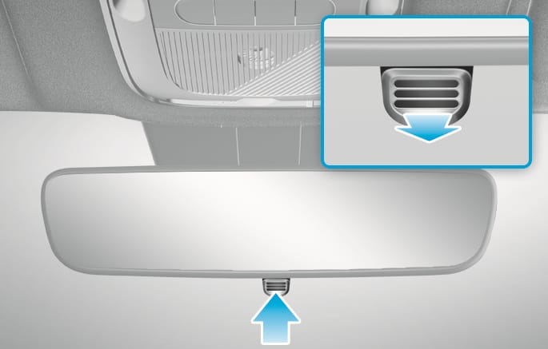
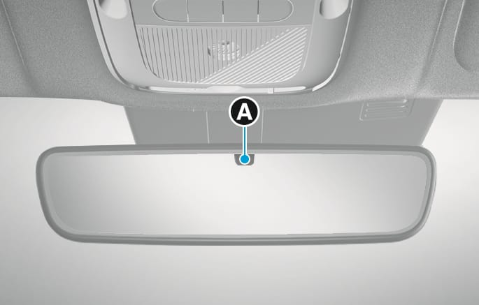
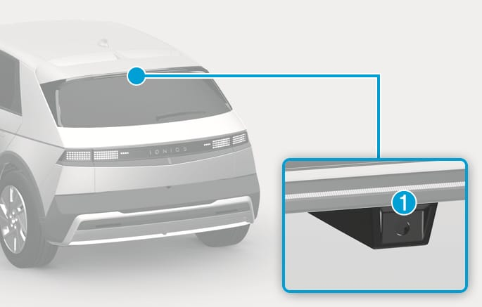
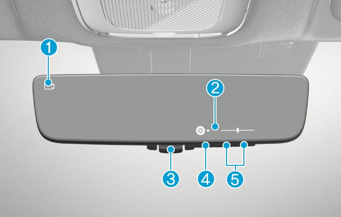
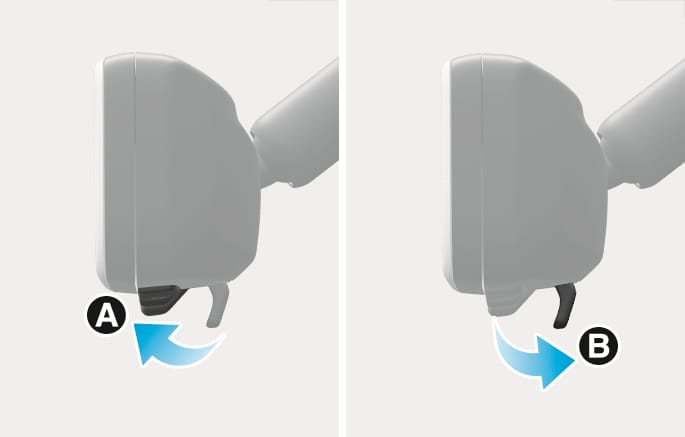
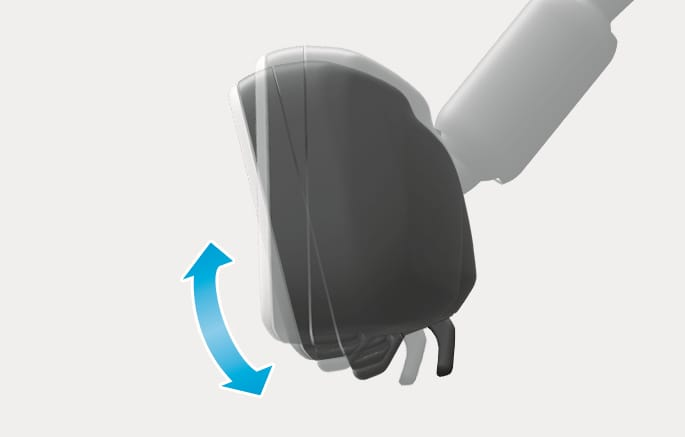
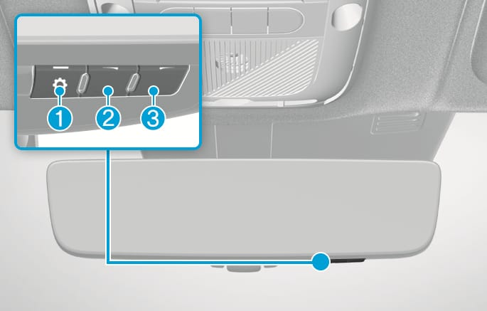
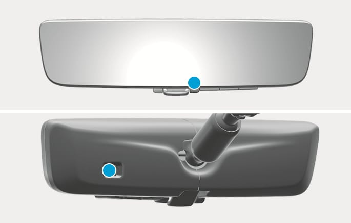
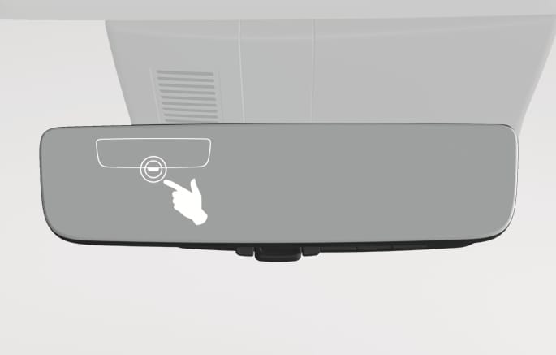

실내 미러
뒷유리를 통해 보이는 후방 시야의 중앙이 실내 미러에 비치도록 미러 각도를 조절하십시오.
-
좌석 높이 이상으로 물건을 쌓아 두지 마십시오. 물건이 후방 시야를 방해할 수 있으며, 급정차 및 충돌 시 앞쪽으로 튀어나와 심각한 부상 및 사고를 유발할 수 있습니다.
-
실내 미러를 개조하거나 와이드 미러 등을 장착하지 마십시오. 충돌 시 또는 에어백 작동 시 심각한 부상을 유발할 수 있습니다.
실내 미러를 임의로 분리하거나 재장착하지 마십시오. 주행 중 소음 또는 떨림이 발생하거나 제품이 파손될 수 있습니다.
야간 주행 시 후방 차량의 전조등 불빛을 감지하고 미러의 반사율을 조정해 눈부심을 감소시킵니다.

2C_InsideRearViewMirror
주행 전 주·야 변환 레버가 주간 위치에 있는 상태에서 실내 미러의 각도를 조절하십시오.
야간 주행 시 주·야 변환 레버를 운전자 방향으로 당기면 뒷차량의 전조등 불빛으로 인한 눈부심을 줄일 수 있습니다.
야간 위치에서는 빛 비춤이 감소되어 거울의 선명도가 떨어지게 되므로 유의하십시오.
전자 감응식 실내 미러(Electronic Chromic Mirror, ECM)는 야간 주행 시 후방 차량의 전조등 불빛을 감지하고 미러의 반사율을 조정해 눈부심을 감소시킵니다.

2C_InsideRearViewMirrorECM
- 센서
-
미러 앞쪽과 뒤쪽의 감지 센서를 가리지 마십시오. 밝기 조절 기능이 정상적으로 작동하지 않을 수 있습니다.
-
미러를 닦을 때 세척제를 미러에 직접 뿌리지 말고, 부드러운 타월이나 헝겊 등에 묻혀 사용하십시오. 세척제가 미러 내부로 스며드는 경우 고장이 발생할 수 있습니다.
디지털 센터 미러(Digital Center Mirror, DCM)는 차량 후방의 카메라를 이용하여 디지털 센터 미러의 화면에 영상을 표시하는 시스템입니다. 디지털 센터 미러를 통해 운전자는 헤드레스트, 수하물 등의 장애물이 있어도 후방 시야를 확보할 수 있습니다.
-
디지털 센터 미러의 올바른 사용에 대한 경고 및 지침을 따르지 않으면 심각한 사고 위험이 있습니다.
-
디지털 센터 미러는 편리한 기능이지만 차량의 올바른 작동을 대신할 수는 없습니다. 시스템에는 물체를 볼 수 없는 영역이 있습니다. 차량 운행 전에 디지털 센터 미러의 사각 지대를 확인하십시오. 운전자는 항상 안전 운전에 대한 책임이 있습니다.
-
운전 중 디지털 센터 미러를 조작하지 마십시오. 그렇게 하면 주의가 흐트러질 수 있고, 차량을 통제할 수 없게 되어 사고나 심각한 부상을 입을 수 있습니다.
-
디지털 센터 미러, 카메라 유닛, 배선을 분해하거나 개조하지 마십시오. 사고나 화재의 원인이 됩니다. 디지털 센터 미러에서 연기나 냄새가 나면 즉시 시스템 사용을 중지하십시오.
-
-
운전하기 전에 디지털 센터 미러를 조정하십시오.
-
시스템을 기존 인사이드 미러 모드로 전환하고 운전석에 올바르게 앉으십시오. 그런 다음 뒷유리를 제대로 볼 수 있도록 미러를 조정합니다.
-
디지털 미러 모드로 전환하여 디스플레이 설정을 조정합니다. 미러를 조정하지 않고 주행하면 미러 표면의 반사로 인해 디지털 미러 모드(카메라 뷰 모드)에서 디스플레이 시청이 어려울 수 있습니다.
-
디지털 센터 미러에서 보여지는 이미지 영역과 광학 미러의 영역이 다르므로, 차량을 운행하기 전 차이점을 확인하시기 바랍니다.
-
-
디지털 센터 미러가 오작동하는 경우 즉시 시스템을 기존 인사이드 미러 모드로 전환하십시오.
-
강한 빛(예: 태양광 또는 뒤따른 차량의 상향등)이 카메라에 들어오면 디지털 센터 미러의 모니터 화면에 광선 또는 눈부신 빛이 나타날 수 있습니다. 이 경우 시스템을 기존의 인사이드 미러 모드로 적절하게 전환하십시오.
-
카메라(1)가 더러워지면 디지털 센터 미러에 물체가 선명하게 표시되지 않을 수 있습니다. 이 경우 물을 묻힌 부드러운 천이나 면봉으로 닦으십시오.

2C_DCMCamera
시스템 구성요소

2C_DCMInsidemirrorOverview
-
카메라 표시등
카메라의 정상 작동을 나타냄
-
아이콘 표시 영역
아이콘 표시, 밝기 및 각도 조절
-
레버
디지털 미러 모드와 광학 미러 모드의 전환에 사용
-
메뉴 버튼
메뉴 버튼을 눌러 아이콘 표시 영역을 확인하고 원하는 밝기와 각도를 선택함
-
선택/조절 버튼
원하는 항목의 설정을 변경
모드 변경 방법

2C_DCMModeChange
- 디지털 모드
- 일반 모드
시동 'ON' 상태에서 모드를 전환할 수 있습니다.
-
모드 선택 레버를 끝까지 당기면 디지털 미러 모드(카메라 뷰 모드)로 전환됩니다.
차량 후방의 이미지를 표시합니다. 이 모드에서는 카메라 표시등(5)이 나타납니다.
-
모드 선택 레버를 끝까지 밀어서 광학 미러 모드로 전환됩니다.
디지털 센터 미러의 디스플레이를 끄면 광학 미러로 사용할 수 있습니다.
미러 높이 조절

2C_DCMModeHeightAdjust
운전 자세에 따라 디지털 센터 미러의 높이를 조절할 수 있습니다.
디지털 센터 미러를 위아래로 움직여 광학 미러의 높이를 운전자에게 맞게 조절하십시오.
디스플레이 설정 (디지털 미러 모드)
디지털 미러 모드에서 디스플레이 설정

2C_DCMInsidemirrorSetting
-
메뉴 버튼(1)을 통해 디스플레이 밝기와 표시 화면의 상하 각도를 조절할 수 있습니다.
아이콘
설정
Ń 디스플레이의 밝기를 조절합니다.
ń 표시 화면의 상하 각도를 조절합니다
-
메뉴 버튼을 반복해서 눌러 조절하려는 항목을 선택하십시오.
-
버튼(2) 또는 버튼(3)을 눌러 설정을 변경합니다. 버튼을 약 5초 이상 사용하지 않으면 아이콘이 사라집니다.
디지털 센터 미러의 밝기를 너무 밝게 설정하면 눈의 피로를 유발할 수 있습니다. 디지털 센터 미러를 적절한 밝기로 조절하십시오.
눈이 피곤하면 광학 미러 모드로 변경하십시오.
광 센서의 오작동 방지

2C_DCMCaution
광 센서의 오작동을 방지하기 위해 센서를 만지거나 가리지 마십시오.
디지털 미러 모드 작동 조건
시동 'ON' 상태여야 합니다.
시동 'ON' 상태에서 'OFF' 또는 'ACC' 상태로 변경되면 디스플레이가 꺼집니다.
디지털 센터 미러를 디지털 미러 모드에서 사용할 때
-
테일게이트가 열린 상태에서는 디지털 센터 미러 이미지가 제대로 표시되지 않을 수 있습니다. 운전하기 전에 테일게이트가 닫혀 있는지 확인하십시오.
-
반사광으로 인해 화면이 잘 보이지 않은 경우 파워 선블라인드(사양 적용 시)를 닫으십시오.
-
밤과 같이 어두운 곳에서 운전을 하면 다음과 같은 상황이 발생할 수 있습니다. 그 중 어느 것도 오작동이 발생했음을 알리지 않습니다.
-
표시된 이미지에서 사물의 색상은 실제의 색상과 다를 수 있습니다.
-
운전자의 신체적인 컨디션이나 연령에 따라 표시된 이미지에 초점을 맞추는데 평소보다 시간이 더 오래 걸릴 수 있습니다. 이 경우 광학 미러 모드로 변경하십시오.
-
차량이 운행 중일 때 표시되는 영상을 동승자가 쳐다보지 않도록 하십시오. 멀미의 원인이 될 수 있습니다.
-
시스템이 오작동 할 때

2C_DCMMalfunction
디지털 미러 모드에서 디지털 센터 미러를 사용할 때 그림과 같은 이미지가 표시되면 시스템이 오작동할 수 있습니다. 이미지는 몇 초 후에 사라집니다. 레버를 조절하여 광학 미러 모드로 변경한 후, 가까운 당사 직영 하이테크센터나 블루핸즈에 문의해 점검을 받으십시오.
디지털 센터 미러의 오작동 방지하기
-
시너, 벤젠, 알코올 등의 세제로 거울을 닦지 마십시오. 거울 표면이 변색, 열화되거나 손상될 수 있습니다.
-
미러와 카메라를 분리, 분해, 개조하지 마십시오.
-
유기용제, 차량용 왁스, 유리창 클리너, 유리 코팅제가 카메라에 묻지 않도록 하십시오. 이런 일이 발생하면 가능한 한 빨리 닦아내십시오.
-
카메라 렌즈를 청소할 때는 물기 있는 부드러운 천으로 카메라 렌즈를 닦으십시오.
-
카메라 렌즈를 세게 문지르지 마십시오. 긁히거나 깨끗한 이미지를 전송하지 못할 수 있습니다.
-
카메라에 강한 충격을 가하지 마십시오. 고장의 원인이 됩니다. 이런 경우에는 가능한 한 빨리 당사 직영 하이테크센터나 블루핸즈에 문의해 점검을 받으십시오.
-
차량 시동이 꺼진 후 디지털 센터 미러를 장시간 사용하면 배터리가 방전될 수 있습니다.
-
디지털 센터 미러 근처에 무선 장치의 안테나를 부착하지 마십시오. 무선기기의 전파로 인해 디지털 센터 미러의 이미지가 흐트러질 수 있습니다.
-
버튼을 무리하게 누르거나 레버를 거칠게 작동시키면 시스템 고장이나 디지털 센터 미러 자체가 떨어질 수 있습니다.
-
디지털 센터 미러의 본체를 90° 이상 회전시키지 마십시오. 디지털 센터 미러가 손상될 수 있습니다. 디지털 센터 미러 본체에 강한 충격을 가하지 마십시오. 시스템 고장의 원인이 됩니다.
-
외부 조명이 강해 디지털 센터 미러 표시 화면이 잘 보이지 않는 경우 일반 모드로 전환하여 사용하십시오.
디지털 센터 미러 오류 아이콘 및 해결 방법
|
증상 |
가능한 원인 |
해결책 |
|
아래의 아이콘이 화면 오른쪽에 표시됩니다.
|
디지털 센터 미러가 매우 뜨겁습니다.(화면이 점차 어두워집니다. 온도가 계속 상승하면 디지털 센터 미러가 꺼지게 됩니다.) |
미러 온도를 낮추기 위해서는 실내 온도를 낮추는 것이 좋습니다.(거울이 식으면 아이콘이 사라집니다.) 미러가 차가워도 아이콘이 사라지지 않으면 당사 직영 하이테크센터나 블루핸즈에 문의해 점검을 받으십시오. |
|
디지털 모드 아이콘이 꺼지고 영상에러 아이콘이 표시됩니다.
|
시스템이 오작동할 수 있습니다. |
광학 미러 모드로 변경 후 당사 직영 하이테크센터나 블루핸즈에 문의해 점검을 받으십시오. |